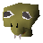

Gu'Tanoth (underground)
Underground area at 2528, 9446 · Feldip Hills, Underground
Open on the world map → Open in knowledge graph → Surface: Gu'Tanoth
NPCs
| NPC | Level | Spawns | Notable drops |
|---|---|---|---|
| 111 | 1 | Coins, Herb drop table, Water rune, Nature rune | |
| 81 | 1 | ||
| 5 | 1 | Coins, Water rune, Body rune, Goblin mail | |
| 2 | 4 | Coins, Water rune, Body rune, Goblin mail | |
| 1 | 19 | ||
| 1 | 1 | ||
| 1 | |||
| 1 | |||
| 1 | |||
| 1 | |||
 Skavid | 1 | ||
| 1 |